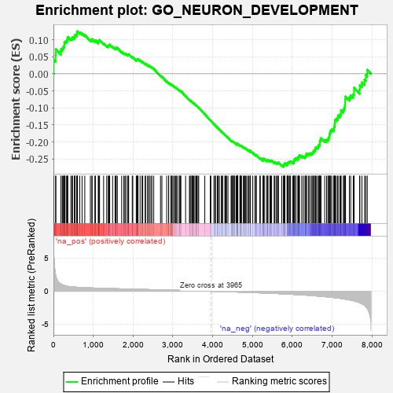
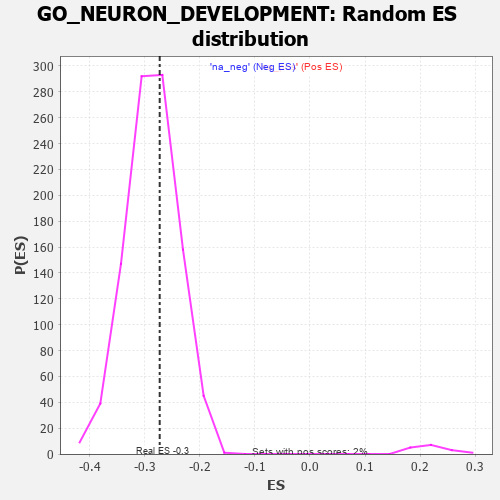

| | | Dataset | 7d |
| Phenotype | NoPhenotypeAvailable |
| Upregulated in class | na_neg |
| GeneSet | GO_NEURON_DEVELOPMENT |
| Enrichment Score (ES) | -0.2730977 |
| Normalized Enrichment Score (NES) | -0.95058733 |
| Nominal p-value | 0.6300813 |
| FDR q-value | 0.90617925 |
| FWER p-Value | 1.0 |
Table: GSEA Results Summary

Fig 1: Enrichment plot: GO_NEURON_DEVELOPMENT
Profile of the Running ES Score & Positions of GeneSet Members on the Rank Ordered List
| PROBE | GENE SYMBOL | GENE_TITLE | RANK IN GENE LIST | RANK METRIC SCORE | RUNNING ES | CORE ENRICHMENT | | 1 | SYT2 | | | 8 | 5.577 | 0.0411 | No |
| 2 | DCLK1 | | | 55 | 2.532 | 0.0543 | No |
| 3 | RAC2 | | | 60 | 2.442 | 0.0722 | No |
| 4 | RORB | | | 189 | 1.097 | 0.0639 | No |
| 5 | NCAM2 | | | 191 | 1.085 | 0.0720 | No |
| 6 | RHOH | | | 228 | 0.987 | 0.0748 | No |
| 7 | INSM1 | | | 250 | 0.939 | 0.0792 | No |
| 8 | ULK1 | | | 272 | 0.875 | 0.0831 | No |
| 9 | HGF | | | 276 | 0.870 | 0.0893 | No |
| 10 | SHOX2 | | | 288 | 0.842 | 0.0942 | No |
| 11 | ARX | | | 322 | 0.782 | 0.0958 | No |
| 12 | CLN5 | | | 346 | 0.751 | 0.0985 | No |
| 13 | GSK3A | | | 351 | 0.745 | 0.1036 | No |
| 14 | LGR6 | | | 360 | 0.738 | 0.1082 | No |
| 15 | RRN3 | | | 438 | 0.667 | 0.1032 | No |
| 16 | LRP1 | | | 470 | 0.648 | 0.1041 | No |
| 17 | CDC20 | | | 480 | 0.644 | 0.1078 | No |
| 18 | HTRA2 | | | 527 | 0.621 | 0.1066 | No |
| 19 | DOK6 | | | 536 | 0.616 | 0.1102 | No |
| 20 | SRF | | | 542 | 0.615 | 0.1142 | No |
| 21 | DDX56 | | | 584 | 0.600 | 0.1134 | No |
| 22 | RAPH1 | | | 592 | 0.597 | 0.1170 | No |
| 23 | PITX3 | | | 594 | 0.596 | 0.1214 | No |
| 24 | FBXW8 | | | 601 | 0.594 | 0.1251 | No |
| 25 | HES5 | | | 661 | 0.571 | 0.1218 | No |
| 26 | ID1 | | | 719 | 0.555 | 0.1186 | No |
| 27 | RERE | | | 787 | 0.536 | 0.1139 | No |
| 28 | SF3A2 | | | 928 | 0.500 | 0.0995 | No |
| 29 | ZPR1 | | | 967 | 0.491 | 0.0983 | No |
| 30 | DVL3 | | | 971 | 0.490 | 0.1016 | No |
| 31 | AKT1 | | | 1040 | 0.476 | 0.0964 | No |
| 32 | MEF2C | | | 1054 | 0.473 | 0.0983 | No |
| 33 | SRC | | | 1128 | 0.459 | 0.0923 | No |
| 34 | NCK2 | | | 1131 | 0.458 | 0.0955 | No |
| 35 | EMX1 | | | 1143 | 0.455 | 0.0975 | No |
| 36 | GAB1 | | | 1158 | 0.453 | 0.0991 | No |
| 37 | WDR36 | | | 1260 | 0.437 | 0.0893 | No |
| 38 | TBCD | | | 1338 | 0.422 | 0.0825 | No |
| 39 | DRGX | | | 1378 | 0.414 | 0.0806 | No |
| 40 | FKBP4 | | | 1390 | 0.412 | 0.0823 | No |
| 41 | DOCK7 | | | 1398 | 0.410 | 0.0845 | No |
| 42 | CARM1 | | | 1413 | 0.408 | 0.0858 | No |
| 43 | IFRD1 | | | 1486 | 0.392 | 0.0794 | No |
| 44 | SOS1 | | | 1547 | 0.384 | 0.0745 | No |
| 45 | CNTN4 | | | 1571 | 0.379 | 0.0744 | No |
| 46 | FZD1 | | | 1574 | 0.379 | 0.0770 | No |
| 47 | RNF6 | | | 1605 | 0.373 | 0.0759 | No |
| 48 | TRAK1 | | | 1714 | 0.354 | 0.0646 | No |
| 49 | LLPH | | | 1768 | 0.343 | 0.0603 | No |
| 50 | THOC2 | | | 1796 | 0.338 | 0.0594 | No |
| 51 | FMR1 | | | 1816 | 0.334 | 0.0594 | No |
| 52 | SMAD4 | | | 1860 | 0.326 | 0.0563 | No |
| 53 | NEO1 | | | 1879 | 0.323 | 0.0564 | No |
| 54 | PAK3 | | | 1889 | 0.322 | 0.0577 | No |
| 55 | BRSK2 | | | 1979 | 0.308 | 0.0485 | No |
| 56 | ROR1 | | | 1993 | 0.306 | 0.0491 | No |
| 57 | LRRC7 | | | 2080 | 0.294 | 0.0401 | No |
| 58 | FOXD1 | | | 2093 | 0.292 | 0.0408 | No |
| 59 | BMP7 | | | 2107 | 0.290 | 0.0413 | No |
| 60 | UBA6 | | | 2114 | 0.289 | 0.0427 | No |
| 61 | ISLR2 | | | 2124 | 0.287 | 0.0437 | No |
| 62 | DDR1 | | | 2176 | 0.280 | 0.0392 | No |
| 63 | MYLIP | | | 2225 | 0.272 | 0.0350 | No |
| 64 | CREB1 | | | 2243 | 0.269 | 0.0349 | No |
| 65 | WASF1 | | | 2303 | 0.259 | 0.0292 | No |
| 66 | UBE4B | | | 2313 | 0.258 | 0.0300 | No |
| 67 | SIN3A | | | 2361 | 0.251 | 0.0258 | No |
| 68 | LHX9 | | | 2393 | 0.247 | 0.0236 | No |
| 69 | PBX4 | | | 2406 | 0.245 | 0.0239 | No |
| 70 | KDM1A | | | 2447 | 0.237 | 0.0205 | No |
| 71 | VSX1 | | | 2473 | 0.231 | 0.0190 | No |
| 72 | NUMB | | | 2519 | 0.224 | 0.0149 | No |
| 73 | DSCAM | | | 2689 | 0.200 | -0.0055 | No |
| 74 | SLIT2 | | | 2724 | 0.195 | -0.0085 | No |
| 75 | NR2E1 | | | 2844 | 0.177 | -0.0226 | No |
| 76 | WDR5 | | | 2892 | 0.168 | -0.0274 | No |
| 77 | FGFR2 | | | 2895 | 0.167 | -0.0264 | No |
| 78 | RAB17 | | | 2950 | 0.157 | -0.0322 | No |
| 79 | RAB10 | | | 2952 | 0.157 | -0.0312 | No |
| 80 | MTCH1 | | | 2966 | 0.155 | -0.0317 | No |
| 81 | UNC5C | | | 2997 | 0.150 | -0.0344 | No |
| 82 | ULK4 | | | 3022 | 0.146 | -0.0364 | No |
| 83 | FEZ1 | | | 3055 | 0.142 | -0.0395 | No |
| 84 | MAP2 | | | 3074 | 0.140 | -0.0408 | No |
| 85 | LHX3 | | | 3092 | 0.138 | -0.0419 | No |
| 86 | MTMR2 | | | 3126 | 0.133 | -0.0452 | No |
| 87 | PAX6 | | | 3170 | 0.127 | -0.0498 | No |
| 88 | SCYL1 | | | 3172 | 0.126 | -0.0490 | No |
| 89 | TRIO | | | 3192 | 0.123 | -0.0505 | No |
| 90 | TWF1 | | | 3199 | 0.123 | -0.0504 | No |
| 91 | RAB8A | | | 3319 | 0.102 | -0.0651 | No |
| 92 | KIF1A | | | 3415 | 0.088 | -0.0767 | No |
| 93 | SARM1 | | | 3432 | 0.086 | -0.0781 | No |
| 94 | PTPRK | | | 3454 | 0.084 | -0.0802 | No |
| 95 | CDK5 | | | 3480 | 0.080 | -0.0829 | No |
| 96 | UNK | | | 3491 | 0.079 | -0.0836 | No |
| 97 | FES | | | 3501 | 0.077 | -0.0842 | No |
| 98 | PQBP1 | | | 3526 | 0.072 | -0.0867 | No |
| 99 | FRYL | | | 3553 | 0.066 | -0.0896 | No |
| 100 | PARD3 | | | 3584 | 0.063 | -0.0930 | No |
| 101 | MAPK3 | | | 3589 | 0.062 | -0.0931 | No |
| 102 | STK25 | | | 3602 | 0.059 | -0.0942 | No |
| 103 | ACSL4 | | | 3632 | 0.055 | -0.0975 | No |
| 104 | CCKAR | | | 3648 | 0.051 | -0.0991 | No |
| 105 | SPAST | | | 3801 | 0.027 | -0.1186 | No |
| 106 | TOP2B | | | 3938 | 0.005 | -0.1362 | No |
| 107 | EXT1 | | | 3954 | 0.001 | -0.1381 | No |
| 108 | TOR1A | | | 4030 | -0.013 | -0.1478 | No |
| 109 | SFRP2 | | | 4065 | -0.018 | -0.1520 | No |
| 110 | ROBO2 | | | 4066 | -0.018 | -0.1519 | No |
| 111 | MTOR | | | 4114 | -0.025 | -0.1578 | No |
| 112 | ABL1 | | | 4125 | -0.027 | -0.1589 | No |
| 113 | CRK | | | 4139 | -0.031 | -0.1603 | No |
| 114 | GFI1 | | | 4168 | -0.037 | -0.1637 | No |
| 115 | UNC5D | | | 4217 | -0.044 | -0.1696 | No |
| 116 | GPC1 | | | 4238 | -0.048 | -0.1718 | No |
| 117 | GAK | | | 4249 | -0.050 | -0.1727 | No |
| 118 | STRN | | | 4307 | -0.060 | -0.1797 | No |
| 119 | SYT17 | | | 4310 | -0.061 | -0.1795 | No |
| 120 | OPA1 | | | 4330 | -0.065 | -0.1814 | No |
| 121 | FIG4 | | | 4348 | -0.068 | -0.1831 | No |
| 122 | ARF4 | | | 4383 | -0.073 | -0.1870 | No |
| 123 | ERCC6 | | | 4464 | -0.087 | -0.1967 | No |
| 124 | LRRK2 | | | 4467 | -0.087 | -0.1963 | No |
| 125 | MEF2A | | | 4499 | -0.095 | -0.1996 | No |
| 126 | MOB2 | | | 4504 | -0.095 | -0.1994 | No |
| 127 | ILK | | | 4510 | -0.096 | -0.1993 | No |
| 128 | NPTN | | | 4519 | -0.098 | -0.1996 | No |
| 129 | NTRK2 | | | 4543 | -0.104 | -0.2018 | No |
| 130 | ABI2 | | | 4554 | -0.106 | -0.2023 | No |
| 131 | SYT4 | | | 4590 | -0.116 | -0.2060 | No |
| 132 | GATA3 | | | 4614 | -0.120 | -0.2080 | No |
| 133 | ATOH1 | | | 4615 | -0.121 | -0.2071 | No |
| 134 | DLG5 | | | 4619 | -0.121 | -0.2066 | No |
| 135 | RAB21 | | | 4620 | -0.122 | -0.2057 | No |
| 136 | SDK1 | | | 4627 | -0.124 | -0.2055 | No |
| 137 | LMX1A | | | 4631 | -0.124 | -0.2050 | No |
| 138 | LIMK1 | | | 4684 | -0.136 | -0.2107 | No |
| 139 | PTK7 | | | 4687 | -0.136 | -0.2099 | No |
| 140 | ARF6 | | | 4704 | -0.140 | -0.2109 | No |
| 141 | LHX2 | | | 4716 | -0.143 | -0.2113 | No |
| 142 | DCX | | | 4721 | -0.143 | -0.2107 | No |
| 143 | PLCG1 | | | 4770 | -0.151 | -0.2158 | No |
| 144 | RTN4 | | | 4783 | -0.154 | -0.2162 | No |
| 145 | TNIK | | | 4804 | -0.158 | -0.2176 | No |
| 146 | TAOK3 | | | 4823 | -0.162 | -0.2187 | No |
| 147 | SGK1 | | | 4852 | -0.168 | -0.2211 | No |
| 148 | SLIT3 | | | 4890 | -0.175 | -0.2245 | No |
| 149 | MARK2 | | | 4899 | -0.177 | -0.2242 | No |
| 150 | MNX1 | | | 4939 | -0.186 | -0.2279 | No |
| 151 | FZD4 | | | 4940 | -0.186 | -0.2265 | No |
| 152 | EP300 | | | 4941 | -0.186 | -0.2251 | No |
| 153 | KLF4 | | | 5005 | -0.198 | -0.2318 | No |
| 154 | EFHD1 | | | 5057 | -0.211 | -0.2368 | No |
| 155 | DRD2 | | | 5088 | -0.221 | -0.2390 | No |
| 156 | ITSN1 | | | 5094 | -0.222 | -0.2380 | No |
| 157 | HDAC6 | | | 5183 | -0.244 | -0.2475 | No |
| 158 | SMO | | | 5195 | -0.247 | -0.2471 | No |
| 159 | PTEN | | | 5262 | -0.261 | -0.2537 | No |
| 160 | PICK1 | | | 5265 | -0.263 | -0.2519 | No |
| 161 | RIMS2 | | | 5272 | -0.265 | -0.2507 | No |
| 162 | EPHA4 | | | 5273 | -0.265 | -0.2487 | No |
| 163 | MAGI2 | | | 5295 | -0.269 | -0.2494 | No |
| 164 | EPHA1 | | | 5349 | -0.285 | -0.2541 | No |
| 165 | CPNE9 | | | 5374 | -0.289 | -0.2550 | No |
| 166 | GRIN1 | | | 5381 | -0.291 | -0.2536 | No |
| 167 | DLG4 | | | 5388 | -0.293 | -0.2522 | No |
| 168 | CUX1 | | | 5437 | -0.304 | -0.2561 | No |
| 169 | IST1 | | | 5442 | -0.305 | -0.2543 | No |
| 170 | LRIG2 | | | 5460 | -0.310 | -0.2542 | No |
| 171 | KIF3A | | | 5480 | -0.313 | -0.2543 | No |
| 172 | FGFR1 | | | 5543 | -0.332 | -0.2598 | No |
| 173 | EHD1 | | | 5560 | -0.336 | -0.2594 | No |
| 174 | GFRA1 | | | 5594 | -0.342 | -0.2610 | No |
| 175 | ROR2 | | | 5626 | -0.353 | -0.2624 | No |
| 176 | LRP12 | | | 5639 | -0.358 | -0.2613 | No |
| 177 | WNK1 | | | 5650 | -0.362 | -0.2598 | No |
| 178 | SLIT1 | | | 5735 | -0.387 | -0.2678 | No |
| 179 | VAMP7 | | | 5777 | -0.399 | -0.2701 | Yes |
| 180 | TRPC6 | | | 5784 | -0.401 | -0.2678 | Yes |
| 181 | RDH13 | | | 5797 | -0.405 | -0.2663 | Yes |
| 182 | BBS4 | | | 5806 | -0.407 | -0.2643 | Yes |
| 183 | MYT1L | | | 5812 | -0.409 | -0.2618 | Yes |
| 184 | CDK16 | | | 5869 | -0.425 | -0.2659 | Yes |
| 185 | RAB13 | | | 5870 | -0.425 | -0.2627 | Yes |
| 186 | SZT2 | | | 5882 | -0.429 | -0.2609 | Yes |
| 187 | VLDLR | | | 5898 | -0.434 | -0.2595 | Yes |
| 188 | STK11 | | | 5922 | -0.443 | -0.2592 | Yes |
| 189 | VAPA | | | 5939 | -0.449 | -0.2578 | Yes |
| 190 | PRDM1 | | | 5956 | -0.457 | -0.2565 | Yes |
| 191 | XBP1 | | | 6011 | -0.475 | -0.2599 | Yes |
| 192 | RAC1 | | | 6036 | -0.484 | -0.2593 | Yes |
| 193 | PPT1 | | | 6038 | -0.485 | -0.2558 | Yes |
| 194 | NR2E3 | | | 6048 | -0.488 | -0.2533 | Yes |
| 195 | EVL | | | 6052 | -0.490 | -0.2499 | Yes |
| 196 | DBNL | | | 6084 | -0.501 | -0.2502 | Yes |
| 197 | UBB | | | 6090 | -0.503 | -0.2470 | Yes |
| 198 | GBA2 | | | 6136 | -0.515 | -0.2490 | Yes |
| 199 | FEZF2 | | | 6150 | -0.519 | -0.2467 | Yes |
| 200 | ROCK1 | | | 6152 | -0.520 | -0.2429 | Yes |
| 201 | GRID2 | | | 6170 | -0.528 | -0.2411 | Yes |
| 202 | THRB | | | 6178 | -0.531 | -0.2380 | Yes |
| 203 | CDC42 | | | 6236 | -0.548 | -0.2413 | Yes |
| 204 | FLOT1 | | | 6276 | -0.564 | -0.2421 | Yes |
| 205 | NCAM1 | | | 6318 | -0.582 | -0.2430 | Yes |
| 206 | IFT88 | | | 6335 | -0.590 | -0.2406 | Yes |
| 207 | IFT27 | | | 6348 | -0.596 | -0.2377 | Yes |
| 208 | GALR2 | | | 6355 | -0.599 | -0.2339 | Yes |
| 209 | CDKL3 | | | 6401 | -0.618 | -0.2351 | Yes |
| 210 | PTPRD | | | 6423 | -0.629 | -0.2330 | Yes |
| 211 | HERC1 | | | 6467 | -0.647 | -0.2337 | Yes |
| 212 | LAMA1 | | | 6496 | -0.659 | -0.2324 | Yes |
| 213 | TRPV4 | | | 6515 | -0.668 | -0.2297 | Yes |
| 214 | KANK1 | | | 6536 | -0.678 | -0.2271 | Yes |
| 215 | STK24 | | | 6550 | -0.684 | -0.2236 | Yes |
| 216 | ROBO1 | | | 6577 | -0.699 | -0.2217 | Yes |
| 217 | ARF1 | | | 6583 | -0.701 | -0.2171 | Yes |
| 218 | MKS1 | | | 6607 | -0.715 | -0.2147 | Yes |
| 219 | PTPRS | | | 6646 | -0.738 | -0.2140 | Yes |
| 220 | USH1G | | | 6654 | -0.740 | -0.2093 | Yes |
| 221 | VASH2 | | | 6680 | -0.752 | -0.2069 | Yes |
| 222 | CERS2 | | | 6689 | -0.756 | -0.2022 | Yes |
| 223 | PAK1 | | | 6691 | -0.757 | -0.1966 | Yes |
| 224 | EGFR | | | 6708 | -0.765 | -0.1929 | Yes |
| 225 | GSK3B | | | 6719 | -0.768 | -0.1884 | Yes |
| 226 | PAQR3 | | | 6812 | -0.819 | -0.1941 | Yes |
| 227 | AHI1 | | | 6860 | -0.848 | -0.1938 | Yes |
| 228 | HCN1 | | | 6895 | -0.865 | -0.1917 | Yes |
| 229 | PTPRF | | | 6908 | -0.872 | -0.1866 | Yes |
| 230 | LRP8 | | | 6931 | -0.889 | -0.1828 | Yes |
| 231 | SNX3 | | | 6934 | -0.893 | -0.1763 | Yes |
| 232 | FAT4 | | | 6948 | -0.901 | -0.1712 | Yes |
| 233 | DNM1L | | | 6963 | -0.913 | -0.1661 | Yes |
| 234 | NPHP4 | | | 6991 | -0.931 | -0.1625 | Yes |
| 235 | ARL3 | | | 7041 | -0.963 | -0.1616 | Yes |
| 236 | MYH10 | | | 7048 | -0.966 | -0.1551 | Yes |
| 237 | ATL1 | | | 7062 | -0.972 | -0.1494 | Yes |
| 238 | MFSD8 | | | 7067 | -0.977 | -0.1425 | Yes |
| 239 | CPNE5 | | | 7070 | -0.977 | -0.1354 | Yes |
| 240 | RYK | | | 7102 | -1.000 | -0.1319 | Yes |
| 241 | WHRN | | | 7139 | -1.025 | -0.1288 | Yes |
| 242 | SYT1 | | | 7148 | -1.033 | -0.1220 | Yes |
| 243 | TSPO | | | 7194 | -1.065 | -0.1198 | Yes |
| 244 | LAMB1 | | | 7220 | -1.094 | -0.1148 | Yes |
| 245 | CNGB1 | | | 7222 | -1.096 | -0.1066 | Yes |
| 246 | CIB1 | | | 7280 | -1.152 | -0.1053 | Yes |
| 247 | MYO7A | | | 7302 | -1.175 | -0.0991 | Yes |
| 248 | GRN | | | 7319 | -1.194 | -0.0922 | Yes |
| 249 | TRPM1 | | | 7324 | -1.197 | -0.0837 | Yes |
| 250 | EFHC2 | | | 7326 | -1.199 | -0.0747 | Yes |
| 251 | NGEF | | | 7335 | -1.209 | -0.0666 | Yes |
| 252 | LHX1 | | | 7431 | -1.305 | -0.0691 | Yes |
| 253 | NPY | | | 7465 | -1.356 | -0.0631 | Yes |
| 254 | DCLK2 | | | 7529 | -1.439 | -0.0604 | Yes |
| 255 | LAMA2 | | | 7549 | -1.468 | -0.0517 | Yes |
| 256 | DCC | | | 7550 | -1.470 | -0.0406 | Yes |
| 257 | ANK3 | | | 7690 | -1.740 | -0.0455 | Yes |
| 258 | ADCY1 | | | 7695 | -1.752 | -0.0328 | Yes |
| 259 | CASP3 | | | 7747 | -1.902 | -0.0250 | Yes |
| 260 | DCDC2 | | | 7813 | -2.099 | -0.0176 | Yes |
| 261 | DLX5 | | | 7845 | -2.378 | -0.0036 | Yes |
| 262 | FYN | | | 7881 | -2.622 | 0.0117 | Yes |
Table: GSEA details [plain text format]

Fig 2: GO_NEURON_DEVELOPMENT: Random ES distribution
Gene set null distribution of ES for GO_NEURON_DEVELOPMENT